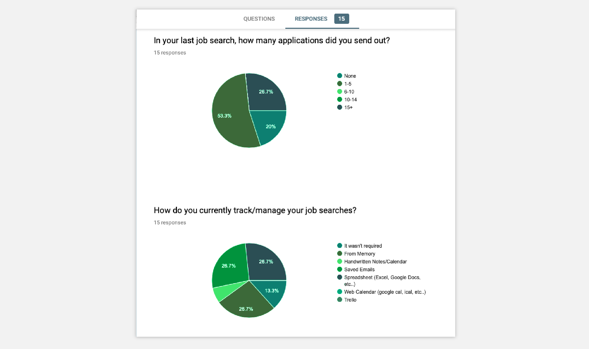
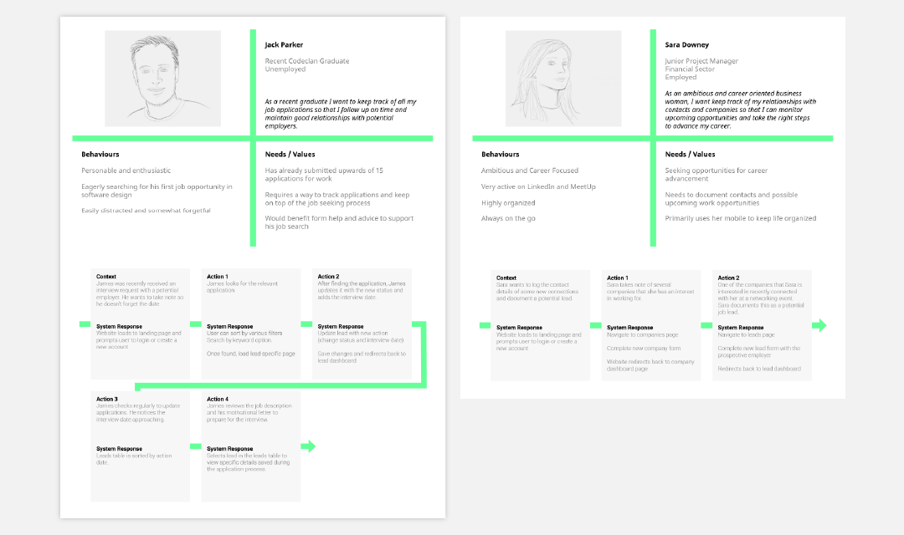
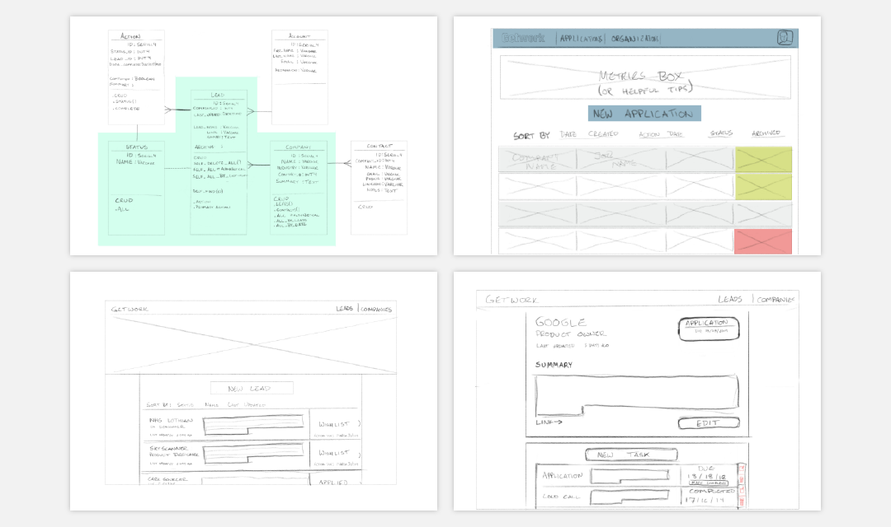
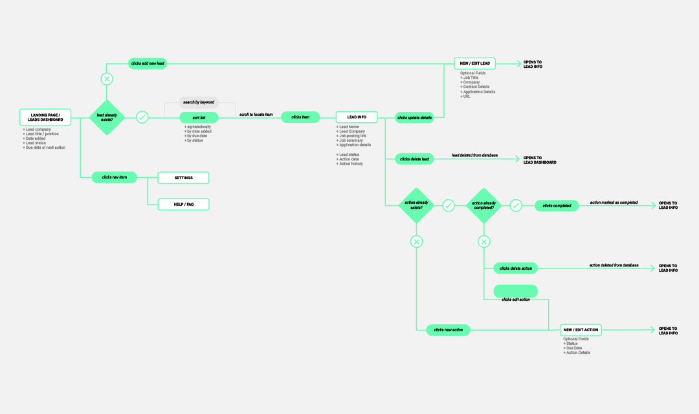
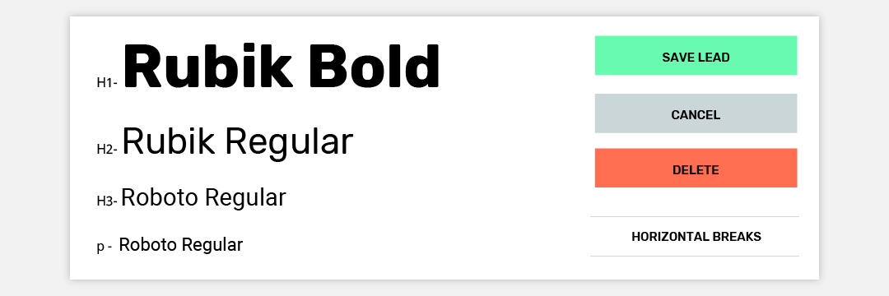
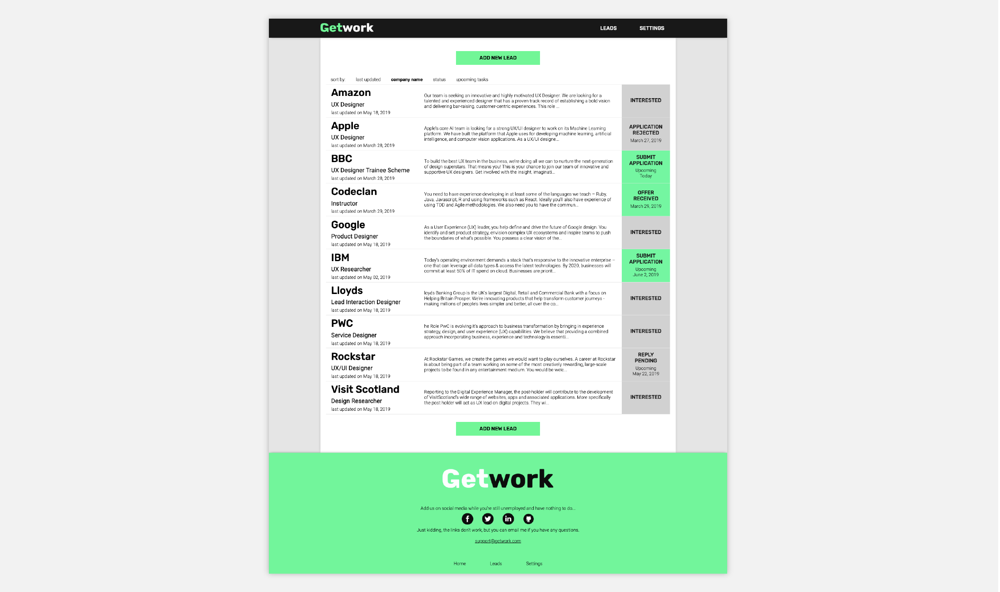
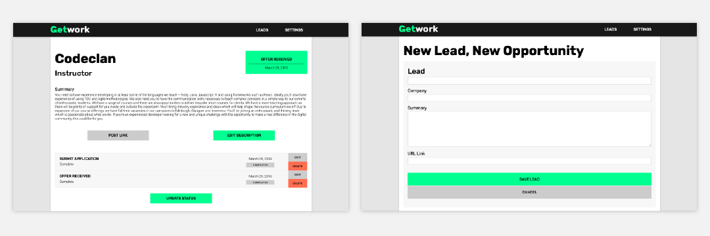

Getwork was designed to help fellow Codeclan students manage their job search post-graduation by keep track of their leads and documenting their application process.
Role: UX Design / Digital Product Design / Ruby Development
Technologies: Vanilla Ruby, PostgreSQL, Sinatra, HTML and CSS
Timeline: One week sprint in April 2019

Google survey results: 2 / 12 questions that were asked to respondants
Research Findings
In order to better understand my user base, I conducted a short google survey. It helped to answer a few of my questions about people’s job seeking habits
26% of respondants applied for 15+ jobs in their last job search
More than half of respondants use digital tools to track their job search; however, only 5% schedule their meetings and follow ups in a calendar.
Most respondants prepared and applied for jobs on a desktop or laptop.
Respondants did not feel their current methods helped them stay organized.
To help my job seeking process, I need...
‘analytics on successes and failures’
‘automatically generated cover letters because I hate writing them’
‘suggestions of jobs that are relevant to me’
‘motivational reminders to not procrastinate’
‘to start keeping everything in one place’

Protopersonas and user journeys helped give context to the survey data

Planning sketches: wireframes of the different app views and class diagrams detailing the datatypes. Since the majority of users in the survey conducted their job search on desktop PCs, I decided to focus on creating the design for desktop use.
UX Challenges
Technology was a challenging constraint while designing the user experience of the application. The brief required a functioning prototype developed using only using only Vanilla Ruby; planning an app without Javascript meant that new information has to be restricted to new page loads.

User flow diagram details required new page loads with white boxes
UX Solutions
Two primary views were developed where most of the necessary information could be found and edited, which helped to keep page loads to a minimum.
Dashboard View displays all the leads and their current status. Leads can be created and sorted by company, upcoming deadlines or application status.
Detail View shows all the information specific to a lead, including company profiles, job location, and upcoming action items such as interview dates and application deadlines. From the detailed view, users are also able to edit, and delete leads, and update their lead status with new tasks, such as sending a follow up email, or scheduling an interview date.

I adopted a minimal, information focused layout with hard edges and clean type. Colour were used spairingly and only to draw attention to clickable elements and key information.

App Screenshot: The dashboard view displays all the leads and their current status.

App Screenshots Left to Right: Detail View / Add New Lead
 Check out the code on Github
Check out the code on Github